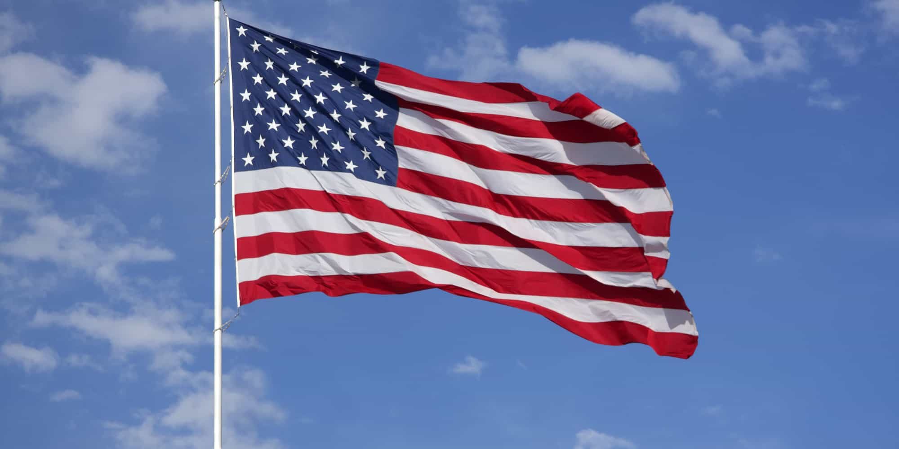

< < < Back
One Man In State Of Five Million Kills Nine People; Governor Removes Confederate Flag – Return Of Kings
In the most contrived act of symbolism in the history of the Southern United States, Governor Nikki Haley has called for the Confederate flag to be removed from the South Carolina State Capitol. Despite being Governor for four and a half years (and seemingly able to pick up a history of slavery book), it took the alleged killing of nine black bible study attendees by white supremacist Dylann Roof for Haley to act.
Our narcissism culture has reached yet another apex, the old record receding into oblivion. The Governor’s cry reeks of opportunism and “my time in history.” Should we now expect a 2020 run for the White House?
South Carolina is a state of nearly five million people, but the purported actions of one man has led to the flag being removed. Not only is this sensationalist, given the ample reasons and popular excuses for taking down the flag previously, it reflects other unsettling, jump-the-gun trends in society.
For example, the near-universal description of Dylann Roof has been that of a recluse and probably mentally ill loner. Yet the events in Charleston are now being used to portray a huge chunk of America’s 200-million-plus Caucasians as unabashed, inveterate racists upholding an all-powerful anti-black social system.
Why not get rid of the American flag?

Governor Haley’s decision is a contextual non-sequitur. Of course, it fits perfectly the preponderant narrative of the United States, where a flag initially supportive of slavery (the Stars and Stripes) is upheld and revered, while another, subsequent one is vilified. But it should cause us all to ponder the selective nature of how history is invoked, especially in times where those like Governor Haley can generate immense political capital. Renderings of and judgments about past times require a very hazy memory in the modern age.
America’s flag epitomizes the ad hoc remembering of US history. Its thirteen stripes represent the thirteen colonies and founding states which, by and large, Northern or Southern, allowed forms of slavery to persist until decades after independence. Slavery in the North was only really extinguished 20 years before the Civil War started.
Moreover, the various Northern economies were far from comparable to the cotton-producing South. It is highly contestable that Yankee states would still have steadily abolished the practice of slavery if their cash crops and non-agricultural output had been different.
Although feminists and others deliberately obfuscate the story of female suffrage (most non-landholding men were denied the vote until only some decades or even mere years before women), there’s no doubt that women did not have the vote when the American flag was adopted. So why not tear it down as well? You see, SJW-led rage spirals against the Confederate flag depend on rampant tunnel vision.
In addition, how about we rename Washington D.C. as Martin Luther King D.C. because of George Washington’s undeniable racism? Or have some college professor-legislators posthumously declare Thomas Jefferson a rapist for having sex with the slave Sally Hemings? The list of things we should, logically, be doing or revising in light of the juxtaposition of American history with SJW ideology is limitless.
The Confederate flag itself isn’t the main point
If Nikki Haley had any conviction, rather than political radar, she would have lowered the Confederate flag years ago.
The central issue, aside from elites’ ignorance of other similar historical symbols, is instead the chosen reasons for removing the flag. Other ones have, as I have said, existed prior to the events in Charleston. Political decisions such as lowering this flag have been made to maximize public fallout, not when the time is (or was) actually right.
As the first minority Governor of South Carolina, surely Nikki Haley, albeit a Subcontinental Indian-American, would have already grasped African-American feelings about the Confederate flag when she originally entered the South Carolina legislature ten years ago, before her first gubernatorial campaign.
White supremacists have appropriated the American flag before, too. This is a fact lost on the Governor and others, especially those in the race-baiting “civil rights community.” In her statement, Haley referred to two widely-held views of the Confederate flag in South Carolina, positive and negative, saying they could coexist. A greater lie will probably never pass her lips.
By removing the Confederate flag in the immediate aftermath of the church shooting, Haley is forever equating Dylann Roof’s use of it with the use by countless non-accused murderers throughout her state and the entire South.
Walmart is now banning Confederate merchandise… and getting advertising worth millions
Even more than Haley, Walmart could have done its own “lowering” of the Confederate flag and stopped selling it and related merchandise years ago. But it’s only done it now. From a PR standpoint, Walmart is behaving in the most economically rationalist sense possible, jumping on the bandwagon before other retailers can.
Excuse my eye rolling, and presumably yours, however. I have no reason to believe that Walmart’s customer base doesn’t mirror US demographics, so a similar proportion of African-Americans would shop there as there are blacks in the United States’ population. So why now, Walmart? If you wanted to do the right thing by history, why not do it 130 or 140 years after slavery was fully ended, not 150?
We’ll never get these answers, frankly, because politicians and corporations will be too enamored with profiting from this propitious moment. In the meantime, regular, everyday people will be hiding a flag they previously cherished, not as a sign of bigotry, but of their heritage. And Walmart will save millions of dollars in planned advertising.
SJWs and other political opportunists are shameless in their timing

Two gay marriage opportunists.
Look at Hillary Clinton and Barack Obama’s flip-flopping on gay marriage. Both reversed their opinions after a majority or near-majority of Americans were shown to support it in certain polls. Most importantly, they were on the cusp of momentous political runs: Hillary had just quit her post as Secretary of State and was eyeing a presidential run; Obama was only months away from his reelection bid.
Governor Haley’s call regarding the Confederate flag, and the seconding of those supporting it, is similarly timed and unapologetically hypocritical.
It’s true that patience is a virtue. But there’s a gargantuan difference between patience about removing a perceived symbol of racism (according to many) and waiting to remove that symbol until a time that guarantees you and others your laudatory day in the sun. Nikki Haley knows all about this.
Read More: Finland’s Welfare State Model Holds The Interests Of Terrorists Above Its Own People